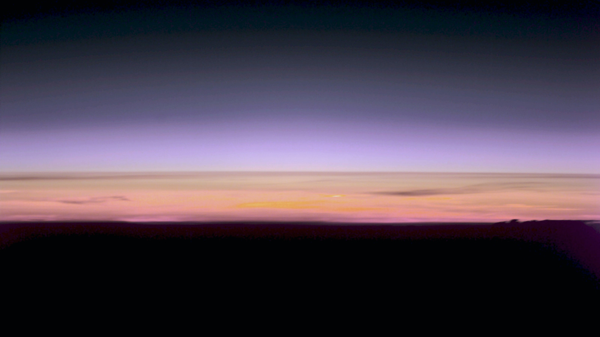

REDAKSJONELT UTKAST – IKKE PUBLISERT
Klima og vitenskap · Nyheter · 28. oktober 2026
Klimagassene i atmosfæren nådde nye rekordnivåer
Den globale gjennomsnittskonsentrasjonen av CO₂ nådde 426,8 ppm i 2025, viser en WMO-rapport publisert 27. oktober 2026. Også metan og lystgass var på rekordnivåer. Tallene måler mengden klimagasser i atmosfæren, ikke bare årets utslipp.

Et nytt toppnivå
Verdens meteorologiorganisasjon (WMO) la 27. oktober 2026 fram Greenhouse Gas Bulletin nr. 22. Gjennomsnittskonsentrasjonen av karbondioksid (CO₂) i 2025 var 426,8 deler per million (ppm), med oppgitt usikkerhet på ±0,2 ppm. Metan (CH₄) nådde 1 948 deler per milliard (ppb), mens lystgass (N₂O) nådde 339,1 ppb, også nye rekorder.
CO₂-nivået var ifølge WMO omtrent 53 prosent høyere enn anslått førindustrielt nivå rundt 1750. De tilsvarende økningene var 167 prosent for metan og 26 prosent for lystgass. Tallene bygger på observasjoner fra et internasjonalt nettverk av målestasjoner og beskriver globale gjennomsnitt for 2025, ikke en øyeblikksmåling høsten 2026. Ppm betyr én del per million, mens ppb betyr én del per milliard.
Utslipp og konsentrasjon er ikke det samme
Årlige utslipp beskriver hvor mye klimagass som tilføres atmosfæren i løpet av et år. Konsentrasjonen måler hvor mye som finnes der til enhver tid. En stor del av utslippene tas opp av hav og vegetasjon, men en betydelig andel blir værende i atmosfæren og bidrar til at konsentrasjonen stiger videre.
Derfor kan konsentrasjonen øke selv i perioder der veksten i årlige utslipp avtar. WMO opplyser at CO₂-konsentrasjonen steg med 2,8 ppm fra 2024 til 2025, mot 3,5 ppm året før. Økningen var dermed lavere enn den uvanlig store veksten i 2024, men litt høyere enn gjennomsnittet på om lag 2,63 ppm per år i perioden 2016–2025.
Metankonsentrasjonen økte med 6 ppb fra 2024 til 2025, mens lystgass økte med 1,1 ppb. Dette er endringer i konsentrasjon, ikke målinger av de årlige utslippsmengdene.
Lang virkningstid
CO₂ kan påvirke klimaet i svært lang tid. WMO understreker at dagens konsentrasjonsnivå binder klimasystemet til ytterligere oppvarming over lang tid. Også metan og lystgass bidrar til drivhuseffekten, men gassene har ulike levetider og kilder.
Metan kommer både fra naturlige kilder og fra menneskelig aktivitet, blant annet jordbruk, avfallsanlegg og fossile energisystemer. Lystgass er en annen langlivet drivhusgass, blant annet knyttet til landbruk.
Hva betyr tallene?
Én global årsmåling kan ikke i seg selv forklare været i et bestemt land eller en bestemt sesong. Den inngår derimot i et langt datasett som viser hvordan atmosfærens sammensetning er i endring.
Resultatene gir et oppdatert faktagrunnlag før FNs klimaforhandlinger COP31 i Antalya i Tyrkia 9.–20. november 2026. De sier ikke hvilke politiske tiltak som alene vil virke best, men viser at konsentrasjonene av de viktigste langlivede drivhusgassene fortsatt stiger.